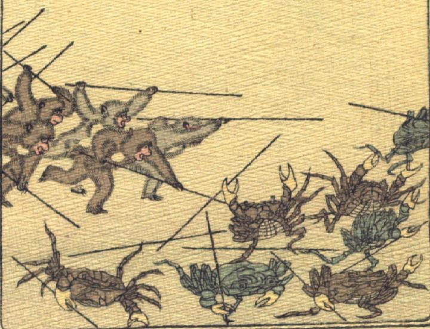

猿に追いやられる蟹たち。左手側から棒状のものを持った数体の猿が襲い掛かっている。蟹たちは身をかがめ、あるものは棒状のものを放り出して、逃げている。
著作者：J.Dautremer／出典：親書誌：U426_nichibunken_0106：La bataille du singe et du crabe／日付：2006／資源識別子：U426_nichibunken_0106_0006_0000
Copyright (c)2010- International Research Center for Japanese Studies, Kyoto, Japan. All rights reserved.